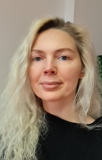

Alona Temchenk
E-mail: temchenko.alona@gmail.com
Phone number: +38 095 248 50 74
Languages: Ukrainian, English (B1), German (B1)
Experience
- May 2022 - September 2022 || Autobahn LTD. Cloud engineer trainee
- June 2019 - April 2022 || LLC “EAGLE ROUTE”. Logistics manage
- April 2016 - June 2019 || “General Trans Alliance Logistic” LLC (Roshen group). Transport Department Manager
- December 2013 - April 2015 || “Service-Champion” Ltd. Head of the Freight Forwarding Department
- April 2013 - November 2013 || “Global Way Logistic” LLC. Manager
Education
- 1994-2005 Svetlodarsk Gymnasium
- 2005-2007 Gorlovka Transport College at Donetsk National Technical University
- 2007-2010 Makiivskyi Economic-Humanitarian Institute
I adore solving complex puzzles and unraveling the mysteries of software.
The profession of a tester allows me to combine my fascination with technology
the ability to identify errors and help improve products for better usability

MY LINKEDIN